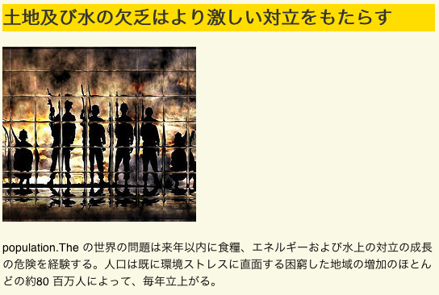
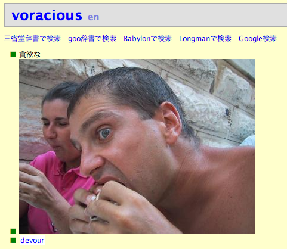

人気のあるブログには必ず画像が入っています。 ニュースサイトGIGAZINEにインスパイヤされて作られた ネタサイトTerazineでは、 Diggの記事を自動翻訳したテキストに Flickrから検索してきた適当な画像を加えることにより、 翻訳や写真が多少変でもそれなりに格好良いサイトになっています。
Terazineの7/7の記事

画像は何かを記憶するためにも有用です。 以前紹介した 単語帳.orgというサイトでは、 以下のように単語の意味と画像を同時に表示することによって 単語のイメージを覚えやすくしています。 単語と意味を組にしただけの単語カードをいくら使ってもなかなか単語は 覚えられないものですが、以下のような写真を何度も見ていると、 “voracious” という単語を見るたびにこの顔を思い出してしまいます。 語学学習ソフトとして定評がある RosettaStoneというソフトでも、 単語と画像を一緒にユーザに提示することによって学習効果を高めています。
“voracious”という単語のページ

小さな画像でも有るのと無いのはかなり違います。 携帯電話のメールでは絵文字が有効に使われていますし、 Webページではサイトを簡潔に表現するfaviconを 用意しておくのが一般的になっています。 また、Edward Tufteは、様々な情報をアイコン化してテキスト中に埋め込む 「Sparkline」と呼ばれる 情報視覚化手法を提案しています。 たとえば株価が上がったとか下がったとか書くよりも のような画像をテキストに埋め込んで表現する方が はるかによくわかります。
画像はテキストに比べるとこれまではオマケ的な扱いを受けていましたが、 新たな検索/入力/登録手法の開発によって一級市民になってほしいものだと思います。